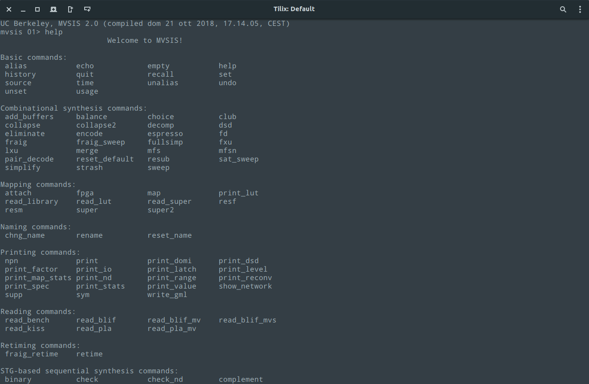

MVSIS
MVSIS is a program modeled after SIS, but the logic network it works on is such that all variables can be multi-valued, each with its own range. We include all the technology-independent transformations of SIS for combinational logic synthesis as well as transformations specific to multi-valued nodes such as merge, pair decode, encode, print range, reset default. MVSIS has been made to have the look and feel of SIS. MVSIS can read and write BLIF-MV and BLIF files with the read blif mv command as well as binary PLAs in the ”.type fd” format. MVSIS 2.0 is a major re-write of MVSIS 1.0. The goals of MVSIS 2.0 were to significantly speed up the processing of logic, and to provide a clean source code for the first time. It is expected that future logic synthesis research will benefit by implementing new ideas in MVSIS, even for binary logic. In the long run, MVSIS will be a complete replacement of SIS, but with the added capability of handling multi-valued non-deterministic networks. Downloads
Available packages:Download Debian package
The source code is available in both tarball and zip:
Download source (.tar.gz) Download source (.zip)
If you're using a Debian-based distribution like Ubuntu, just download the
.deb file and
install it, either through GDebi or simply using dpkg:
sudo dpkg -i mvsis_2.0_all.deb
If you want to compile it, just make sure you installed the correct dependencies:
sudo apt install -y git build-essential gcc-multilib libreadline-dev
./configure prefix=/usr/local
make
sudo make install
The compilation was tested under Ubuntu 18.04 64-bit.